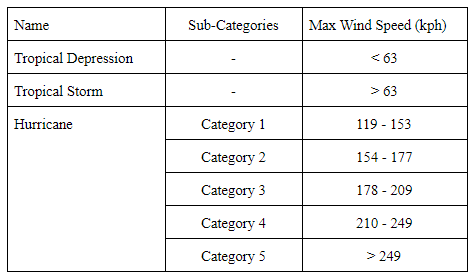
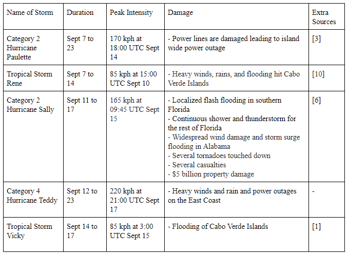

blog
welcome to our blog
New content is added regularly, so be sure to check back for more posts!
Dealing with SAD
Written by Grace Yuan, Edited Emma Hoglund | 28/11/2020
Seasonal depression - perhaps you’ve heard the phrase before… It’s that “down” feeling one may experience on a seasonal basis, typically around fall to winter. Officially known as seasonal affective disorder (or, appropriately, SAD), individuals experiencing this form of depression can face symptoms as straightforward as constantly feeling tired or having low spirits.4 Although these symptoms may seem commonplace, SAD is a serious health phenomenon that should not be taken lightly.
While the exact cause of SAD is still unclear, several studies have pinpointed some key points to understanding this disorder.
The current major hypothesis is the phase-shift hypothesis, which suggests that there is an optimal alignment of our sleep-wake cycle and our biological clock, also known as the circadian rhythm.1 As we near winter, the day length shortens and the amount of sunlight decreases, causing these two cycles to drift apart. With more darkness, the hormone melatonin increases in production and induces sleepiness and lethargy.3 For people with SAD, these effects are more severe.
Another discovery was that people with SAD have difficulty regulating the neurotransmitter serotonin, which is responsible for balancing mood.3 The rate of serotonin production increases with luminosity, but in the winter, sunlight is limited.4 People with SAD are not able to appropriately downregulate, or reduce the function of, the serotonin transporter during this time.2 As a result, they face even lower serotonin levels and feel more depressed.
Because of this relationship to limited sunlight exposure, the leading treatment for SAD is light therapy, which has been shown to be effective in reducing the symptoms of the disorder.1
Like many other mental disorders, seasonal affective disorder can be hard to notice at first. However, it is important to remember that there are many ways to get help. To get an official full diagnosis, you can ask your doctor for a physical exam. In addition, it is important to try to get some time in the sun every day. The recommended daily duration is from 30 minutes to 2 hours per day.4 Taking small steps such as this may go a long way in keeping your spirits high this holiday season.
Campbell, P. D., Miller, A. M., & Woesner, M. E. (2017). Bright Light Therapy: Seasonal Affective Disorder and Beyond. The Einstein journal of biology and medicine: EJBM, 32, E13–E25.
Mc Mahon, B., Sofie A.B., Martin, M. K., Liv, H. V., Hageman, I., Dam, H., Svarer, C. Da Cunha-Bang, S., Baaré, W., Madsen, J., Hasholt, L. Holst, K. Frokjaer, V.G., Knudsen, G.M. (2016). Seasonal difference in brain serotonin transporter binding predicts symptom severity in patients with seasonal affective disorder, Brain, 139(5), 1605–1614. https://doi.org/10.1093/brain/aww043
Melrose, S. (2015). Seasonal Affective Disorder: An Overview of Assessment and Treatment Approaches. Depression research and treatment, 2015, 178564. https://doi.org/10.1155/2015/178564
Roecklein, K. A., & Rohan, K. J. (2005). Seasonal affective disorder: an overview and update. Psychiatry (Edgmont (Pa. : Township)), 2(1), 20–26.
Academic Culture
Written by Maha Chaudhry, Edited by Emma Hoglund | 28/11/2020
Academic culture refers to the set of behaviours and values that are shared by people who work or study at universities. More specifically, it refers to the ways in which university members - professors and students - communicate with another and the expectations required of them. Each country or even university may inculcate different academic cultures, thus this post will focus on the predominant academic culture found in Canadian universities.
Faculty-Student Relations
The relationship between instructors and students can vary from highly formal to informal depending on the instructor. At the beginning of the course, instructors will generally let students know how they prefer to be addressed.1 This could range from asking students to call them “professor”, or even perhaps by their first names. While professors generally lead lectures, teaching assistants (TAs) are usually responsible for leading tutorials and labs as well as grading some of the coursework.1 as they are typically university students themselves. TAs generally are addressed by their first names.
Professors and TAs will set up office hours where students can meet with them to discuss any questions or concerns they may have about a course or the information being taught. A big jump from the high-school to university environment is that students are expected to be completely responsible for their own learning.2 Therefore, it is also their responsibility to ask clarification or help with class materials. 2
Assignments
There is a general standard of writing and presentation in academia. For example, written assignments generally adhere to the following format: a thesis statement, followed by supporting text and the writer’s take on the matter, finalized by a summarizing conclusion.2 Unless stated otherwise, writing must be in third person and formally toned. It is critical that all assignments must be free of plagiarism. According to UAlberta’s definition, plagiarism refers to the “submission of words, ideas, images, or data of another person as one's own in any academic writing, essay, thesis, research project, or assignment in a course or study program.”2 Universities take plagiarism very seriously. The consequences for plagiarism can result in disciplinary measures ranging from failing a particular assignment to expulsion. If a student wants to refer to another piece of work, they are required to accurately reference the work using APA, MLA, Chicago, or another given citation style.
Given that university emphasizes the application of taught material, independent thinking and new approaches to problem solving questions are valued. Students are encouraged to discuss and challenge ideas and methods presented in class to develop their critical thinking abilities. 3
Academic Culture in Canada. (n.d.). Retrieved November 06, 2020, from https://www.sfu.ca/students/isap/explore/culture/canadian-academic-culture.html
Academic Culture. (2020). Retrieved November 06, 2020, from https://www.ualberta.ca/international/international-student-services/culture-and-lifestyle-guide/academic-culture.html
Brodie, H. (2020, February 20). 6 Canadian Classroom Norms That Are Foreign to International Students. Retrieved November 06, 2020, from https://blog.ualberta.ca/6-canadian-classroom-norms-that-are-foreign-to-international-students-86b0a02668f0
The 5 tropical cyclones hitting the Atlantic Ocean
Written by Maha Chaudhry, Edited by Vanessa Wong | 24/10/2020
The Atlantic hurricane season occurs from June to November when there is an increased frequency of tropical storms forming over the Atlantic ocean. The 2020 hurricane season has been highly active, with 5 tropical cyclones in the Atlantic basin at once for the first time since 1971 [8]. The 5 systems included Hurricane Paulette and Sally, Tropical Storm Teddy and Vicky, and Tropical Depression Rene [2].
How do hurricanes form?
When warm air above the ocean near the equator rises up, it creates an area of low pressure underneath, which pushes air from higher pressures in [5]. That air heats up and rises as well. The cycle continues as higher pressure air continues to press into lower pressure areas, heating and rising over and over again. The water in the air forms clouds. The whole system of clouds and winds spins, growing faster and faster as it is fed by the ocean’s heat [5].
How are they categorized?
Depending on the maximum wind speed a hurricane can reach, it is categorized under the following names and sub-categories [11]:
The 5 Tropical Cyclones Event
The following table includes basic information on each of the 5 storms including names, how long they lasted, and the damage they caused. This information was taken from the National Hurricane Centre [9]:
Global Warming
Although it is not common to have 5 tropical systems in one go, scientists say events like this may become more frequent in the future due to global warming. It is unclear whether the number of storms will increase, the strength of the storms will. The National Oceanic and Atmospheric Administration (NOAA) suggests an increase in category 4 and 5 systems, with winds speeds increasing up to 10% and precipitation by 10 to 15% [7]. The higher average global temperatures also means that tropical storms are shifting northward, which will put more human lives at risk, especially with the growing population density on coastlines [7]. Furthermore, with higher sea levels, storm surges are more likely to cause flooding [4].
Cape Verde – Deadly Flash Floods in Praia. (September 16, 2020). FloodList. Retrieved October 3rd, 2020, from http://floodlist.com/africa/cape-verde-deadly-flash-floods-in-praia
Chinchar, A., & Brink, H. (2020, September 15). 5 tropical cyclones are in the Atlantic at the same time for only the second time in history. Retrieved October 3rd, 2020, from https://www.cnn.com/2020/09/14/weather/atlantic-ocean-5-active-tropical-cyclones/index.html
Herald, D. (2020, September 15). Knocked down tress and power lines: Damage reported as Hurricane 'Paulette' makes rare landfall in Bermuda. Retrieved October 3rd, 2020, from https://www.deccanherald.com/international/world-news-politics/knocked-down-tress-and-power-lines-damage-reported-as-hurricane-paulette-makes-rare-landfall-in-bermuda-887734.html
How climate change makes hurricanes more destructive. (n.d.). Environmental Defense Fund. Retrieved October 3rd, 2020, from https://www.edf.org/climate/how-climate-change-makes-hurricanes-more-destructive
How Do Hurricanes Form? (2019, December 04). NASA Science Space Place. Retrieved October 3rd, 2020, from https://spaceplace.nasa.gov/hurricanes/en/
Hurricane Sally Crawling Toward Gulf Coast With Potentially Historic and Life-Threatening Flooding. (2020, September 16). The Weather Channel. Retrieved October 3rd, 2020, from https://weather.com/storms/hurricane/news/2020-09-15-hurricane-sally-forecast-louisiana-mississippi-alabama-florida
Hurricanes and Climate Change. (2020, September 14). Center for Climate and Energy Solutions. Retrieved October 3rd, 2020. from https://www.c2es.org/content/hurricanes-and-climate-change/
McFall-Johnsen, M. (2020, September 15). A shocking image from space shows a record 5 tropical cyclones in the Atlantic basin at the same time. Retrieved October 3rd, 2020, from https://www.insider.com/nasa-image-from-space-record-5-tropical-cyclones-atlantic-2020-9
National Hurricane Center. (2001, January 01). United States Department of Commerce. Retrieved October 3rd, 2020, from https://www.nhc.noaa.gov/
Sewell, Katie (September 8, 2020). Tropical Storm Rene path: Rene blasts Cabo Verde Islands as NHC forecast hurricane upgrade. Retrieved October 3rd, 2020 from https://www.express.co.uk/news/world/1332943/Tropical-Storm-Rene-path-spaghetti-models-Cabo-Verde-Islands-NHC-NOAA-hurricane
Tropical Cyclones. (2020, August 21). World Meteorological Organization. Retrieved October 3rd, 2020, from https://public.wmo.int/en/our-mandate/focus-areas/natural-hazards-and-disaster-risk-reduction/tropical-cyclones
The Hungry Side of COVID-19: Food Insecurity During the Pandemic
Written by Vanessa Wong | 10/10/2020
COVID-19 has had a much broader effect than simply being a virus. It has impacted aspects of life that not many people consider, including food insecurity.
What is Food Insecurity?
Food insecurity refers to the inability to access food and eat a regular diet that meets dietary needs for a healthy lifestyle due to financial, physical, or social constraints (Food and Agricultural Organization of the United Nations, 2003). Food insecurity is a serious concern as it has been linked to poor health status and development of chronic conditions including asthma and depression (Kirkpatrick et al., 2010).
Impacts of COVID-19 on Food Insecurity in Canada
According to the 2017-2018 Canadian Community Health Survey (CCHS), it was reported that 12.7% of households were food insecure (about 4.4 million individuals) before the pandemic (Tarasuk & Mitchell, 2020). A recent survey done by Statistics Canada in May 2020 reported that the number of Canadian households facing food insecurity has risen to 14.6%.
Those who are most vulnerable during this time include households with children, where 19.2% are food insecure (Statistics Canada, 2020). Moreover, those who have lost their jobs or can not work due to COVID-19 are three times more likely to be food insecure (Statistics Canada, 2020). Other vulnerable populations include those who identify as Indigenous or Black (Tarasuk & Mitchell, 2020). In fact, Black households are 3.56 times more likely to be food insecure than white households (PROOF & FoodShare, 2019) and 50.7% of First Nations people reported being food insecure in 2017-2018 (Tarasuk & Mitchell, 2020).
Why Food Insecurity Has Increased
There is a strong relationship between economic status and food insecurity. With the pandemic causing a strain on the economic industry, it is no wonder that food insecurity has risen. In May 2020, we saw the highest record of unemployment at 13.7% of Canadians (Statistics Canada, 2020). It has decreased since then (12.3% in June), but still remains very high. Another barrier causing food insecurity surrounds the regulations of physical distancing (Deaton and Deaton, 2020). These policies add additional complications with obtaining food as it limits individuals from accessing services that provide food (i.e. grocery stores, restaurants, food banks) and cause people to stock up on food, leading to food shortages and price increases. These services also face hardship. For example, food banks rely heavily on volunteers who may stop volunteering due to potential exposure to COVID-19.
Takeaways
Food insecurity has been an issue even before the COVID-19 pandemic. It stems from not being able to afford food and having limited access to it, which COVID-19 has put immense pressure on. Households with children and racialized communities including Black and Indigenous people are among those facing food insecurity. These issues will certainly continue to rise, and we will see the true effect of the pandemic when resources such as CERB run out.
Deaton, B. J., & Deaton, B. J. (2020). Food security and Canada’s agricultural system challenged by COVID-19. Canadian Journal of Agricultural Economics/Revue Canadienne d’agroeconomie, 68(2), 143–149. https://doi.org/10.1111/cjag.12227
Food and Agriculture Organization of the United Nations. (2003). Trade reforms and food security: Conceptualizing the linkages. FAO. http://www.fao.org/3/a-y4671e.pdf
Kirkpatrick, S. I., McIntyre, L., & Potestio, M. L. (2010). Child hunger and long-term adverse consequences for health. Archives of pediatrics & adolescent medicine, 164(8), 754–762. doi: 10.1001/archpediatrics.2010.117
PROOF & FoodShare. Fact Sheet Race and Food Insecurity. FoodShare. https://foodshare.net/custom/uploads/2019/11/PROOF_factsheet_press_FINAL.6.pdf
Statistics Canada. (2020, July 10). The Daily—Labour Force Survey, June 2020. https://www150.statcan.gc.ca/n1/daily-quotidien/200710/dq200710a-eng.htm
Statistics Canada. (2020, June 24). Food insecurity during the COVID-19 pandemic, May 2020. https://www150.statcan.gc.ca/n1/en/pub/45-28-0001/2020001/article/00039-eng.pdf?st=tYw-1jLI
Tarasuk, V., & Mitchell, A. (2020). Household Food Insecurity in Canada 2017-2018. https://proof.utoronto.ca/wp-content/uploads/2020/03/Household-Food-Insecurity-in-Canada-2017-2018-Full-Reportpdf.pdf
A Welcome to Tellura
Written by Alyssa Murdoch, Edited by Vanessa Wong | 10/10/2020
Welcome to Tellura!
Tellura is a new student organization aiming to provide accessible information for high school and middle school students to learn about scientific research. Our initiative is based at McMaster University and is comprised of a team of eager undergraduate science students.
We strongly believe that communication is one of the most important aspects of science. The methods in which science can be tested involve formulating hypotheses, testing, analyzing data, and creating conclusions from these experiments. However, without communication through materials such as research articles, journals, blog posts, and the media, the scientific breakthroughs which we encounter every day would not be displayed to the general public. Here at Tellura, we are hoping to make science more accessible and engage participation in the youth community.
History of Tellura
Our organization began with the ideas and creativity of Ayesha Umair. As the president and founder of this initiative, she began Tellura as a website in her spare time over the summer. Ayesha used this website as practice to learn HTML and CSS, specifically Bootstrap, and improve her web building skills. Eventually, Ayesha realized that a comprehensive website including information regarding science literature would be an asset for many students in grades 7-12, as she felt much of this information was not available to her when she was younger. As she expanded her initiative to include many positions, an executive team behind this organization became established. Tellura has finally become a club that is continually expanding and releasing its first content pieces!
Our Mission
Tellura aims to provide a set of accessible guides, materials, and opportunities that help high school and middle school students learn about scientific research. Our initiative strongly believes that scientific advancement is impossible without the sharing of information with the global scientific community through journals, articles, and other forms of science communication. As the organization expands, we hope to reach the general community, especially young people, with our initiative.
How to Get Involved
We always have new opportunities pop up throughout the year for students to get involved. Please check out our ‘Get Involved’ tab in the menu for more information and job posts!
Contact Us
If you have any questions about our initiative or getting involved with Tellura, do not hesitate to reach out to tellurascience@gmail.com For more information on our organization, visit our About Us page.